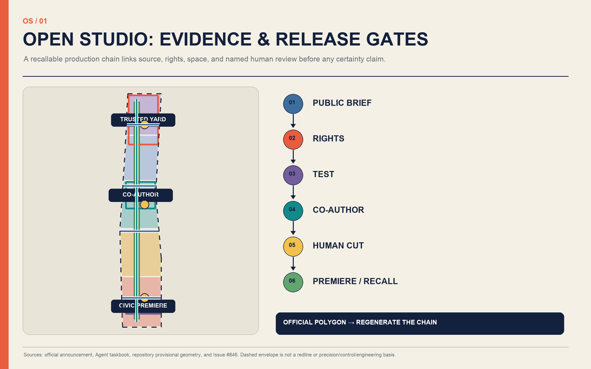
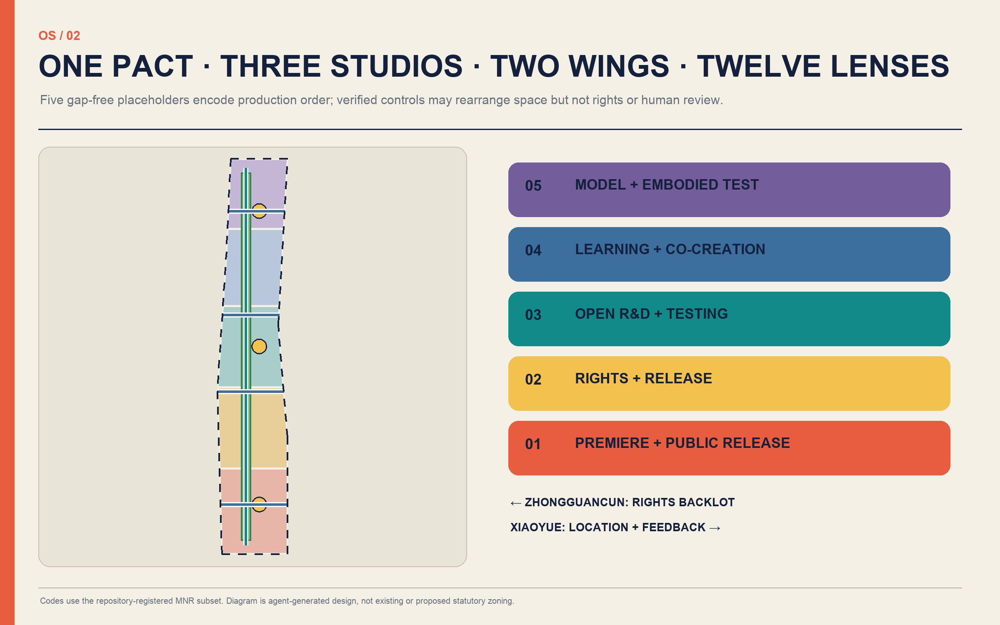
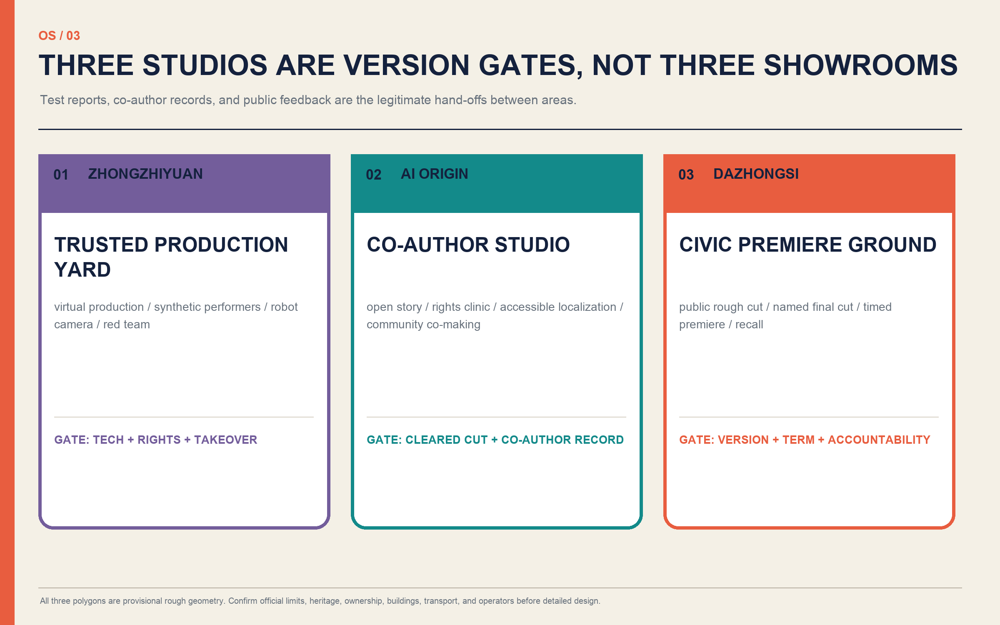
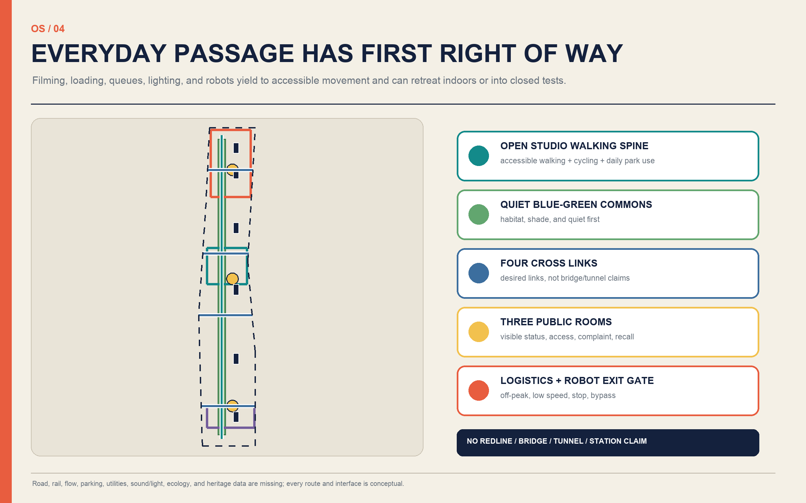
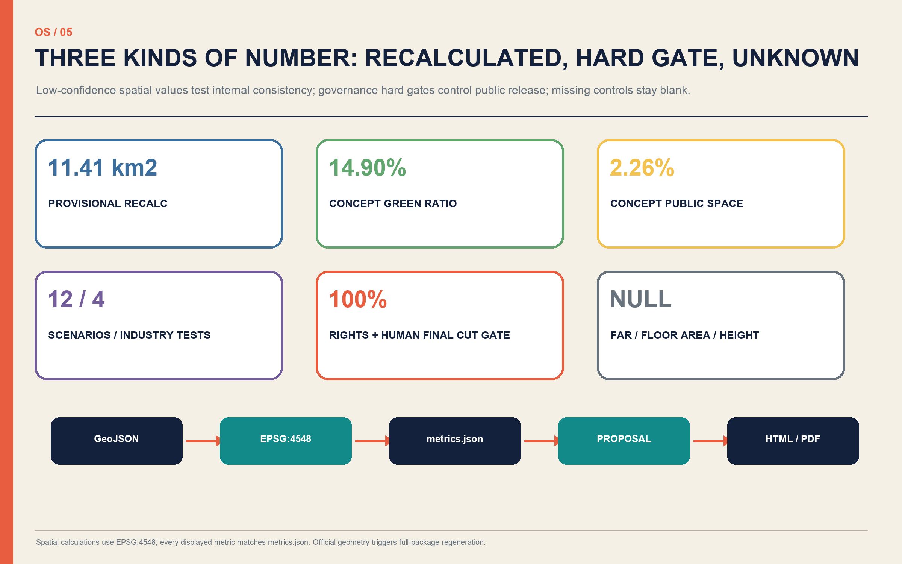

ZHONGZHIYUAN
TRUSTED PRODUCTION YARD
Controlled virtual production, synthetic performers, robot cameras, and red teaming.
Rights-cleared, credited, human-final-cut, and recallable.
The city is not a free film set; residents are not default extras; AI is not the final author. Every placement is a provisional concept.
A public-production protocol links the 43.6 km² research scope, the officially described approximately 11.4 km² overall scope, and 368.4 ha of key areas. The dashed envelope is provisional, not a redline.

Five gap-free bands encode R&D—rights—co-authoring—final cut—release—archive; they are not existing or proposed statutory zoning.

Controlled virtual production, synthetic performers, robot cameras, and red teaming.
Open story, rights clinic, accessible localization, and community co-making.
Public rough cut, named final cut, timed premiere, complaint and recall.

Transport, rail, buildings, utilities, and new infrastructure start reversible; filming, loading, queues, and robots yield to the accessible route.

Space, users, minimum data, privacy, human review, operation, and exit gate are mapped in the bilingual proposal.
Space, users, minimum data, privacy, human review, operation, and exit gate are mapped in the bilingual proposal.
Space, users, minimum data, privacy, human review, operation, and exit gate are mapped in the bilingual proposal.
Space, users, minimum data, privacy, human review, operation, and exit gate are mapped in the bilingual proposal.
Space, users, minimum data, privacy, human review, operation, and exit gate are mapped in the bilingual proposal.
Space, users, minimum data, privacy, human review, operation, and exit gate are mapped in the bilingual proposal.
Space, users, minimum data, privacy, human review, operation, and exit gate are mapped in the bilingual proposal.
Space, users, minimum data, privacy, human review, operation, and exit gate are mapped in the bilingual proposal.
Space, users, minimum data, privacy, human review, operation, and exit gate are mapped in the bilingual proposal.
Space, users, minimum data, privacy, human review, operation, and exit gate are mapped in the bilingual proposal.
Space, users, minimum data, privacy, human review, operation, and exit gate are mapped in the bilingual proposal.
Space, users, minimum data, privacy, human review, operation, and exit gate are mapped in the bilingual proposal.

Pact, rights clinic, version ledger, removable public rooms, baseline survey.
Co-author studio, accessible editions, community commissions, shared equipment.
Independently justified controlled virtual-production and embodied-camera facilities.
Coverage: 17 announcement tasks + agent.1–agent.6, linking scopes, areas, buildings, mobility/utilities, blue-green space, projects, scenarios, brand, cases, landmarks, culture, and operations to text—geometry—metrics—drawings.
PASS TO BE PERSISTED BY FINAL SCRIPTS
This page is fully offline: no remote images, fonts, scripts, forms, tracking, or APIs. Areas use EPSG:4548; FAR, floor area, and height remain unknown; official geometry triggers full regeneration.
Primary assumptions pending professional confirmation: boundaries, key areas, park alignment, controls, buildings, ownership, transport, heritage, ecology, and operators.